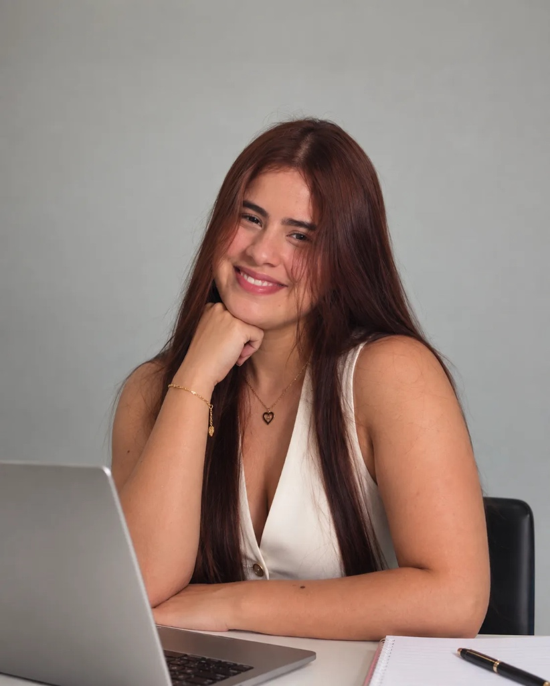

Especializada en comunicación digital, creación de contenido y producción audiovisual.
Trabajemos Juntos
Soy comunicadora social y periodista en formación, apasionada por la creación de contenidos, las historias y la comunicación que conecta con las personas. Me interesa transformar ideas en mensajes creativos que informen, conecten y generen impacto. A lo largo de mi formación he desarrollado habilidades para gestionar, crear y comunicar contenidos en diferentes formatos y plataformas.
Planificación y creación de contenidos para redes sociales. Desarrollo de publicaciones, historias, reels y piezas gráficas. Apoyo en campañas, eventos, programas y proyectos.
Desarrollo de contenidos informativos, realización de entrevistas, creación de guiones, reportería y voz en off. Participación en procesos de producción periodística y elaboración de notas para televisión.
Atención y orientación al cliente, apoyo en ventas y creación de contenidos para las redes sociales de la marca.
2022 - Actualidad | Noveno semestre
Inicio: octubre de 2026 | 100 horas
Graduada en 2022
Estoy abierta a nuevos proyectos y oportunidades donde pueda aportar mi creatividad, conocimientos y experiencia.